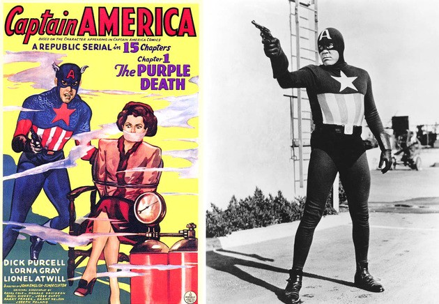
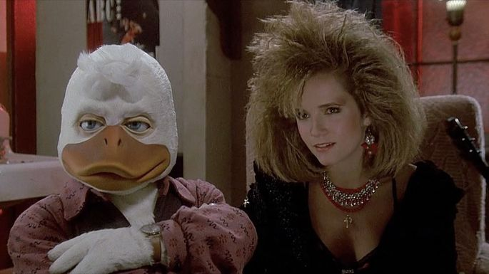
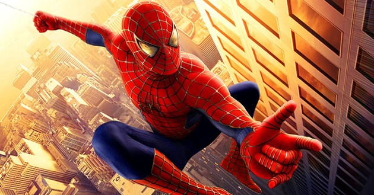

|
|
|
||
STAN LEE |
KEVIN FEIGE |
A quien no le gusto la primera pelicula que vio de marvel, todavia recuerdos que estaba muy emocionado cuando vi la pelicula de iron man, este universo nos a entregado buenos recuerdos, memes, una gran aporte a la cultura pop, vamos a conocer un poco mas acerca de este universo y veremos como este salvo a la industria mas grandes de comics en le mundo.
Bien antes de que todo comenzra solo se tenian comics, antes ya habia peliculas de personajes de marvel pero que estan fuera del UCM por ejemplo esta la pelicual del "CAPITAN AMERICA" lanzadoa en (1944) otra pelicuala que no esta dentro del UCM es "HOWARD THE DUCK" lanzada en (1986) y si nos vamos unos años mas adelante no podemos olvidar la increibel trilogia de SPIDER-MAN del (2002-2007), de los ejemplos anteriores algunos son menos conocidos que otros pero no quitan el echo de que es curios saber que existen estas peliculas.
|  |  | |
|  |
En 2007 Avi Arad y Kevin Feige tuvieron la idea de crear un un Universo Cinematográfico basado en los cómics de Marvel. Esto se convirtió en el Universo Cinematográfico de Marvel, una serie de películas interconectadas y conformada or varias franquicias. Consta de 19 películas hasta el momento. algo que tal vez ya sabes y es que la pelicual que abre el UCM es la de "IRON MAN" en el 2008 Esta película ademas de dar comenzó con el UCM y dar inicio a la tendencia de tener escenas post-créditos tambien salvo a la compania de la bancarrota. Nos presentan la primer escena post creidos presentando al personaje de Nick Fury interpretado por Samuel L. Jackson hablándole a Tony Stark acerca de la iniciativa Vengadores… Ese mismo año también fue estrenada Hulk: El Hombre Increíble, protagonizada por Edward Norton. En esta película se nos introduce al personaje de Bruce Banner y cómo lucha con su alter ego; Hulk para mantenerlo controlado, en la escena post- créditos de esta película se ve Tony Stark hablando con el general Thunderbolt Ross sobre la iniciativa Vengadores.
En 2009 no se produjo ninguna película pero si algo importante, Walt Disney Studios compró Marvel Studios, esto querría decir que ahora todas las películas relacionadas con el Universo Cinematográfico de Marvel serían producidas por la casa del ratón. En 2010 llegó la secuela de Iron Man, película que continuaba con la historia de Tony Stark y también se introdujo el personaje de Black Widow. El año siguiente se introdujeron 2 nuevos personajes, Thor (película en la que hizo su primera aparición Hawkeye) y Capitán América, cada uno teniendo su película de orígenes. En las escenas post-créditos de Capitán América: El primer Vengador, se mostró el primer avance de la siguiente película en el calendario, Los Vengadores.
No cabe duda de que hoy en dia MARVEL se a expandido vastante y que cada vez hay mas generaciones que iran creciendo con estos personajes y la verdad en lo personal me alegro mucho de haber nacido en la epoca donde surge el UCM si tubiera que decidir cual es mi pelicual favorita tengo tres en primer lugar esta "IRON-MAN", en segundo la saga de "SPIDER-MAN" DE Tobey Maguire y por ultimo esta "INFINITY WAR"